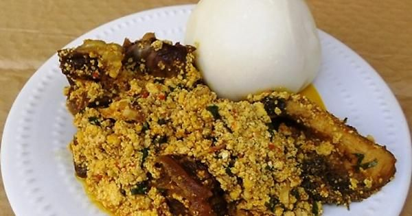
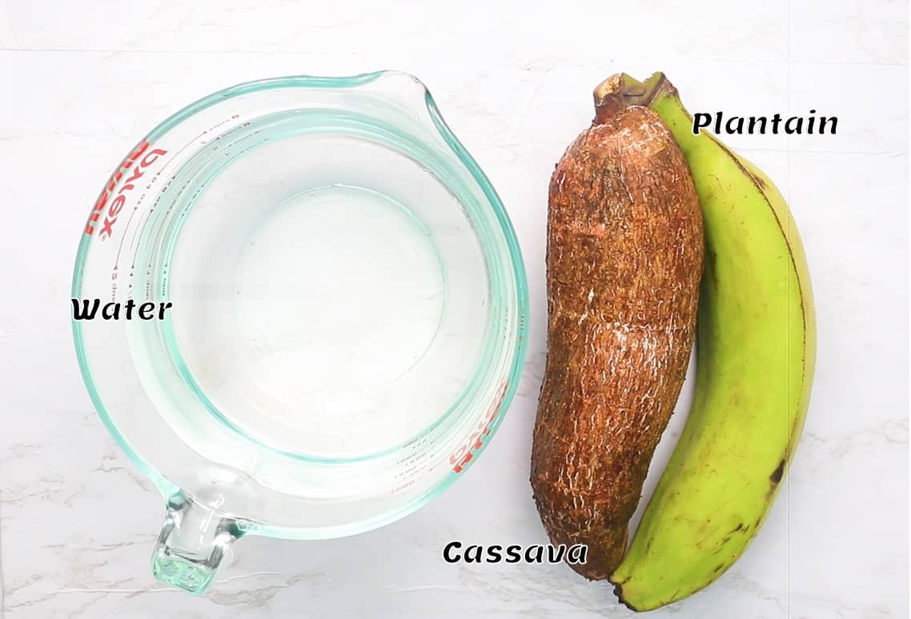

|
Egusi Soup and Fufu
Variety of Egusi and Fufu
Click here to view more Variety of Egusi and Fufu

Egusi Soup and Fufu are quintessential Nigerian dishes deeply rooted in the country's cultural heritage. Egusi Soup, a rich blend of ground melon seeds, palm oil, assorted meats, and vegetables, holds a special place in the hearts of Nigerians, particularly among ethnic groups like the Edo, Yoruba, and Igbo.
This hearty dish is commonly enjoyed during festive occasions, family gatherings, and celebrations, symbolizing unity and togetherness.
Fufu, a staple accompaniment made from cassava or yams, complements Egusi Soup perfectly, adding a deliciously starchy element to the meal. While Egusi Soup and Fufu require meticulous preparation, the effort is rewarded with a dish that embodies tradition, community, and the vibrant flavours of Africa. It's a cherished culinary tradition passed down through generations, symbolizing the rich tapestry of Nigerian culture and the joy of communal dining experiences.
Ingredients used for preparing egusi and fufu
Egusi Soup:

- Ground Egusi/Melon Seeds
- Assorted Meats (Chicken, Beef, or Fish)
- Palm Oil
- Assorted Vegetables (Spinach, Bitterleaf, or Pumpkin leaves)
- Stockfish or Dry Fish
- Onions, Pepper, and Seasoning
Fufu:
- Cassava Flour or Yam Flour
- Water
How To Prepare Egusi Soup and Fufu
| Food | Quantity | Cost(NGN) |
|---|---|---|
| Egusi | 1 | 1500 |
| Fufu | 1 | 500 |
| Chicken | 1 | 1700 |
| Beef | 1 | 700 |
| Turkey | 1 | 2000 |
| Fish | 1 | 1000 |
| Ponmo | 1 | 200 |
| Egg | 1 | 200 |
| Take away plate | 1 | 400 |
At ATES Kitchen, we pride ourselves on offering the finest Egusi Soup and Fufu dishes, celebrating the rich culinary heritage of Nigeria. With free delivery available in Lagos and Port Harcourt for orders exceeding 10,000 NGN, indulging in these traditional delicacies has never been easier. Our carefully crafted meals honour the essence of Nigerian culture, catering to those seeking authentic flavours and memorable dining experiences. Whether you're celebrating a special occasion or simply craving a taste of home, ATES Kitchen is here to serve you. Experience the warmth of African hospitality and the satisfaction of savouring meticulously prepared dishes, all from the comfort of your own home. Order now and let us bring the best of Nigerian cuisine right to your doorstep.
Place your order Order Now
View Developer's Portfolio Developer Portfolio